1. What Declas does
Declas is a desktop application for detecting animals and identifying species in camera trap images and videos. It runs entirely on your computer: once a model is downloaded, no internet connection is needed and no image is ever uploaded.
A typical session looks like this:
- You install one or more AI model extensions (a detector such as MegaDetector, or a regional species classifier).
- You point Declas at a folder of media, or at a whole project with one folder per station.
- Declas runs the model and writes a
detections.jsonfile in each folder, plus annotated copies of the images. - You review the results, correct species names and counts, draw boxes the model missed, and add your own tags.
- You build a table: one CSV with a row per species per image, including date, time, GPS, your tags and, if enabled, the distance to each animal.
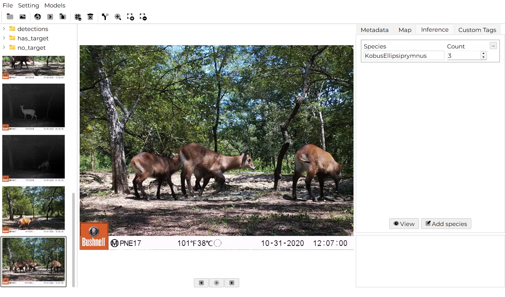
Declas reads .jpg, .jpeg and .png images and .mp4, .avi, .mov and .mkv videos.
2. Quick start (5 minutes)
If you just want to see Declas work on your own images, follow these steps. Each one links to the detailed section.
- Install Declas for your system and open it. Installation
- Open Models › Extensions, go to the Available tab and click Download on MegaDetector 6b (50 MB), or on a species model for your region. Model extensions
- Open Setting › Inference parameters. Set Task to Detection (MegaDetector) or Classification (species model), pick the model, tick Run on main directory, and click Save. Inference parameters
- Click Select directory and choose a folder that contains images.
- Click Run folder(s). Wait for Completed successfully in the status bar.
- Click any thumbnail, then View in the Inference tab to see the boxes. Review results
- Click Build table. The CSV is saved in the folder you selected. Build the table
3. Installation
Declas has installers for Windows, macOS and Linux. Use the Download button, or get the files from the latest GitHub release.
| System | File | Notes |
|---|---|---|
| Windows (64-bit) | Declas_1.4.0.exe | Installer wizard |
| macOS, Apple Silicon (M1 and later) | Declas-macOS-arm64_1.4.0.dmg | Drag to Applications |
| macOS, Intel | Declas-macOS-Intel_1.4.0.dmg | Drag to Applications |
| Linux (x86-64) | Declas-Linux_1.4.0.tar.gz | Extract and run |
Any recent 64-bit computer can run Declas. Larger models (for example DeepFaune Classification, 1.2 GB) need more memory. An NVIDIA graphics card (CUDA) makes processing much faster, but is not required.
Windows
- Download
Declas_<version>.exe. - Double-click it and follow the installation wizard.
- Launch Declas from the Start menu or the desktop shortcut.
The installer is not code-signed, so Windows SmartScreen may say "Windows protected your PC". Click More info, then Run anyway. You only need to do this once.
macOS
- Download the
.dmgfor your Mac: arm64 for Apple Silicon (M1, M2, M3, M4…) or Intel for older Macs. Not sure? Open › About This Mac: "Chip: Apple M…" means Apple Silicon. - Open the
.dmgand drag Declas into your Applications folder. - Launch Declas from Applications.
The app is not notarized, so Gatekeeper may block the first launch. Right-click (or Control-click) the app, choose Open, then confirm.
If macOS says the app is "damaged", open Terminal and run:
xattr -cr /Applications/Declas.appLinux
- Download
Declas-Linux_<version>.tar.gz. - Extract it and start the program:
tar -xzf Declas-Linux_1.4.0.tar.gz cd Declas chmod +x Declas ./Declas
If you see an error about a missing library such as libGL.so.1, install it with your package manager, for example sudo apt-get install libgl1 on Debian or Ubuntu.
First launch
The first time you open Declas, the window is empty and no model is installed yet. That is expected: go to Model extensions to download one.
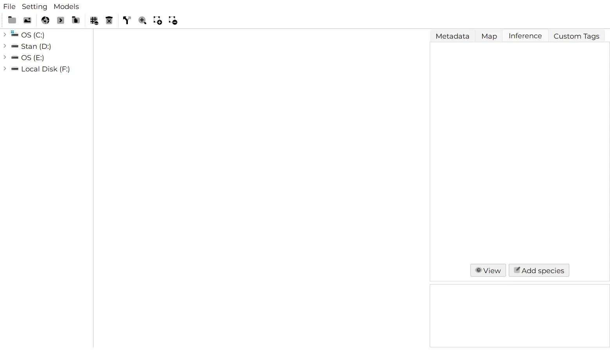
4. A tour of the interface
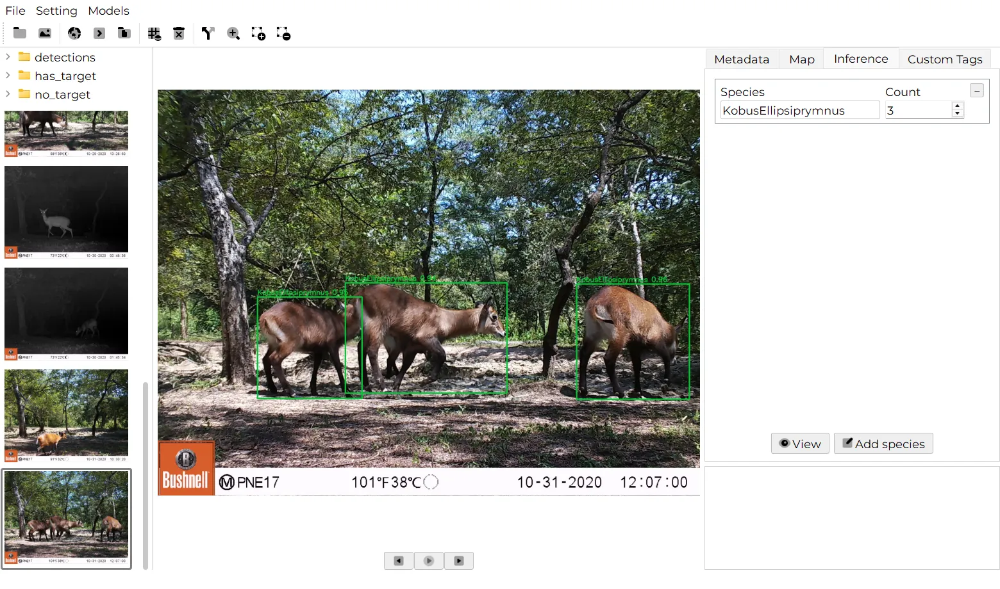
- Menu bar: File, Setting and Models.
- Toolbar: one-click access to every action (see the table below).
- Folder tree (top left): the sub-folders of the folder you selected. Click a folder to show its media.
- Thumbnails (left): every image and video in the current folder, in name order. The open file is highlighted. Click one to open it.
- Viewer (centre): the image or video, with Previous, Play/Pause and Next buttons below it. For videos, a seek bar and ◀◀ / ▶▶ jump buttons appear.
- Side panel (right), with four tabs: Metadata, Map, Inference and Custom Tags.
- Log (bottom right): messages from batch runs, folder by folder.
- Status bar (bottom): short messages such as Running…, Done ✅ or Completed successfully, with a spinner while work is in progress.
Toolbar buttons
| Button | Name | What it does |
|---|---|---|
| Select directory | Choose the folder (or project) to work on. | |
| Select media | Open a single image or video. Its folder is shown in the sidebar. | |
| Show on map | Plot the current image on the map, if it has GPS coordinates. | |
| Run on current media | Run the selected model on the image or video you are looking at. | |
| Run folder(s) | Run the model on the whole selected folder or project. | |
| Build table | Merge all results and tags into one CSV file. | |
| Clear all reports | Delete every detections.json and .csv file under the current folder, after confirmation. | |
| Target or No target split | Copy images into has_target and no_target folders. | |
| Zoom lens | Toggle a magnifier that follows the mouse over the image. | |
| Draw bounding box | Drag on the image to add a box around a missed animal. | |
| Delete bounding box | Hover a box and click it to remove it. |
Menus
| Menu | Item | Purpose |
|---|---|---|
| File | Import | Load an existing detections.json so you can build a table from it. More |
| File | Quit | Close Declas. |
| Setting | Appearance | Light, Dark or System theme. |
| Setting | Inference parameters | Task, model, thresholds, video and distance options. More |
| Setting | Tags | Define your own data fields. More |
| Setting | General | Notification sound, language and theme. More |
| Models | Extensions | Browse, download and remove AI models. More |
| Models | Publish | How to publish your own model for Declas. More |
5. Organise your data
Declas supports two folder layouts. Which one you use is set by the Run on main directory option in Inference parameters. It changes how folders are processed and how the final table is filled.
Mode A: one folder of media ("Run on main directory" ticked)
Use this when your images are not yet sorted, which is the usual case straight from the SD card. Declas processes only the media sitting directly in the folder you select.
Survey_2024/
└── SD30/ ← select this folder
├── 10220130.JPG
├── 10260398.JPG
├── 10280600.JPG
└── …
Process each station by selecting its folder in turn. The species column of the table comes from the model.
Mode B: project › station › species ("Run on main directory" unticked)
Use this when your images are already sorted into species folders inside each station, for example after a first manual sort. Select the project folder: Declas visits every station and processes every sub-folder that contains media, in parallel.
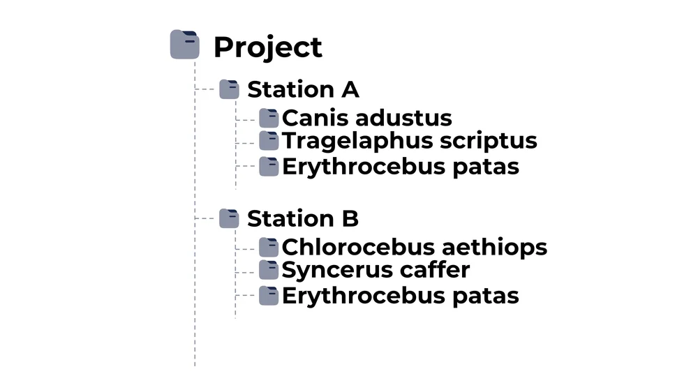
In this mode, the table's station column is the station folder name and the species column is the species folder name. The model is used to count individuals and to find their boxes.
If you select a folder that has images directly inside it while the option is unticked, Declas reports "No valid subdirectories found". Either tick Run on main directory, or select the parent folder that contains the station folders.
Folders named detections and frames are created by Declas and are always skipped.
6. Model extensions
Declas does not ship with a fixed model. Instead, models are installed as extensions: small packages with a description file and the code to run them. Their weights are downloaded once and stored on your computer.
Install a model
- Open Models › Extensions. The window stays open while you keep working in Declas.
- Open the Available tab. Each card shows the model's region, size, framework, author, licence, citation and the classes it can recognise.
- Use the search box to filter by name, region, author, task or species, for example leopard or Europe.
- Click Download. A progress bar shows the download; the button changes to Installed ✓ when it is done.
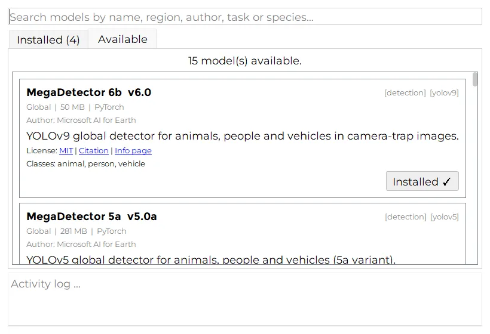
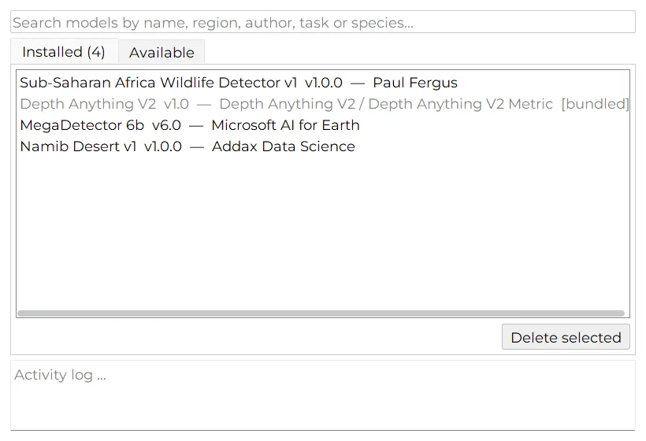
Which model should I pick? If a species model exists for your region, use it with Task: Classification: it finds and names animals in one pass. Otherwise use MegaDetector 6b with Task: Detection to separate animals, people and vehicles from empty images, then sort species yourself.
Available models
This list is read live from the same registry Declas uses, so it always matches what you see in Models › Extensions.
| Model | Task | Region | Classes | Size | Licence |
|---|---|---|---|---|---|
| MegaDetector 6b | Detection | Global | animal, person, vehicle | 50 MB | MIT |
| MegaDetector 5a | Detection | Global | animal, person, vehicle | 281 MB | MIT |
| MegaDetector 5b | Detection | Global | animal, person, vehicle | 281 MB | MIT |
| DeepFaune Detection v1.1 | Detection | Europe | animal, person, vehicle | 22 MB | CC BY-NC-SA 4.0 |
| Sub-Saharan Africa Wildlife Detector v1 | Classification | Sub-Saharan Africa | 36 | 101 MB | CC BY-NC 4.0 |
| DeepFaune Classification v1.1 | Classification | Europe | 26 | 1,220 MB | CC BY-NC-SA 4.0 |
| Namib Desert v1 | Classification | Namibia | 30 | 107 MB | CC BY-NC-SA 4.0 |
| AI4G Snapshot Serengeti | Classification | Serengeti (Tanzania) | 10 | 89 MB | MIT |
| AI4G Amazon Classification | Classification | Amazon | 36 | 192 MB | MIT |
| Colombian Amazon (pywildlife) | Classification | Colombia (Amazon) | 36 | 197 MB | MIT |
| Peruvian Amazon v1 | Classification | Peru (Amazon) | 42 | 247 MB | MIT |
| Southwest USA v3 | Classification | Southwest USA | 27 | 431 MB | MIT |
| New Zealand Invasives v1 | Classification | New Zealand | 17 | 32 MB | CC BY-NC-SA 4.0 |
| Iran Wildlife v1 | Classification | Iran | 13 | 32 MB | CC BY-NC-SA 4.0 |
| Depth Anything V2 (Metric Outdoor) | Depth | Global | distance in metres | 97 MB | Apache-2.0 |
Models are made by their authors, credited in each card. Several are licensed for non-commercial use only (CC BY-NC): check the licence before using results commercially, and cite the model in your publications using the Citation link.
7. Inference parameters
Open Setting › Inference parameters to choose what Declas runs and how. Click Save to keep your changes; they are remembered the next time you open Declas.
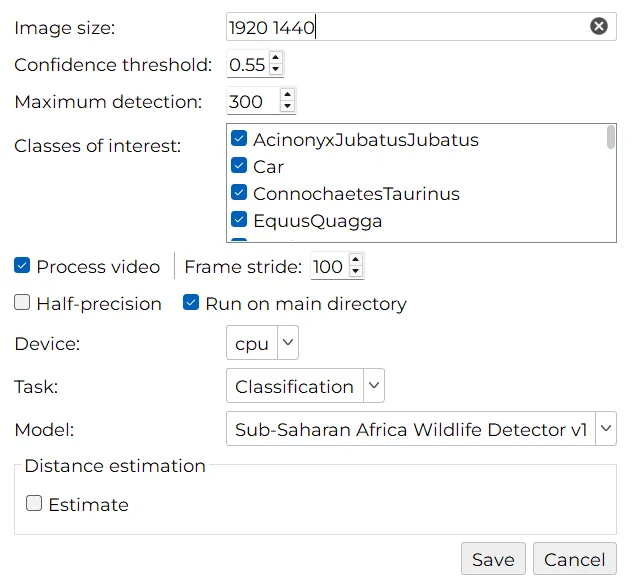
| Setting | What it means | Advice |
|---|---|---|
| Task | Detection finds animals, people and vehicles. Classification also names the species. | Must match the kind of model you pick. |
| Model | The installed extension to use. Only models whose weights are downloaded are listed. | If the list says No models installed, see Model extensions. |
| Image size | Two numbers, width and height, for example 1920 1440. | Keep the default unless a model's author says otherwise. |
| Confidence threshold | Detections with a score below this value are ignored (0 to 1). | 0.55 is a good start. Lower it (0.3–0.4) if animals are missed; raise it if you get false detections. |
| Maximum detection | The maximum number of objects kept per image. | 300 is plenty for wildlife. |
| Classes of interest | Tick the classes or species you want to keep. Unticked ones are dropped from results. | Untick person and vehicle to keep only animals. |
| Process video | When ticked, video files are analysed alongside images. | Untick to skip videos and save time. |
| Frame stride | For videos, analyse one frame out of every n. | At 30 fps, a stride of 30 means one frame per second. Smaller is more thorough but slower. |
| Half-precision | Runs the model in 16-bit precision. | Only useful on a CUDA graphics card. Leave off on CPU. |
| Run on main directory | Ticked: process the selected folder only. Unticked: project › station › species layout. | See Organise your data. |
| Device | cpu, or cuda when an NVIDIA card is detected. | Use cuda if it is listed. |
| Distance estimation | Tick Estimate to compute the distance to each animal after detection. | See Distance estimation. |
8. Run on a single image or video
Use this to try a model or a threshold before processing a whole survey.
- Open a file with Select media, or click a thumbnail after selecting a folder.
- Click Run on current media. The status bar shows Running…, then Done ✅.
- The result appears in the Inference tab. Click View to see the boxes.
The result is saved to the detections.json of that folder, so you can build a table from it later.
9. Run on folders (batch processing)
- Check your settings in Setting › Inference parameters, especially Run on main directory.
- Click Select directory and choose a station folder (mode A) or a project folder (mode B).
- Click Run folder(s).
Processing runs in the background, so you can keep browsing. The log shows each folder as it starts (🔄 Processing: SD30, or 🔄 Station: … in project mode) and ends, and the status bar says Completed successfully when everything is done. A notification sound plays if you enabled it in General settings.
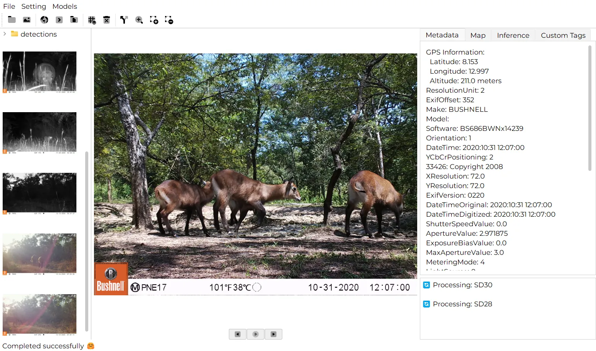
Running a folder again replaces its detections.json. If you edited results by hand, back that file up before re-running.
10. Review the results
The Inference tab
Click a thumbnail and open the Inference tab. Declas shows one card per species found in that image, with the species name and the number of individuals.
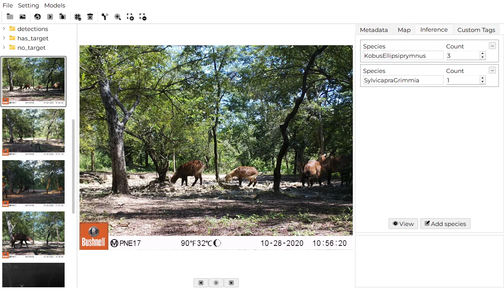
Images where nothing was found are recorded with the species Empty and a count of 0, so they still appear in your table.
See the boxes
Click View to display the annotated copy of the image, with a box and a confidence score for every detection. These copies are saved in the detections sub-folder, so your original images are never modified.
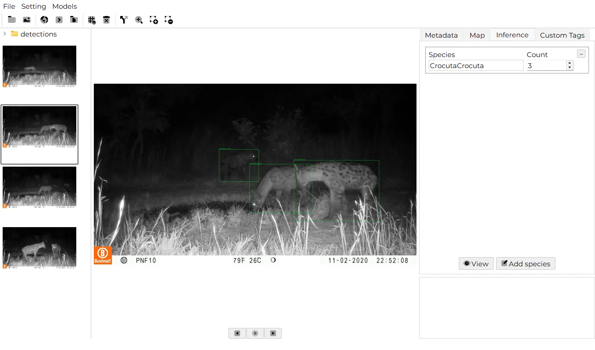
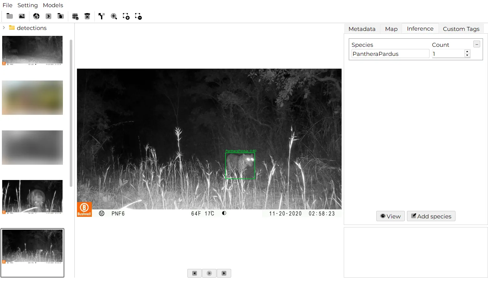
Use Zoom lens to magnify small or distant animals: turn it on, then move the mouse over the image.
Correct species and counts
- Type a new name in the Species field, or change the Count.
- Click Add species to add a card for a species the model did not report.
- Click the – button on a card to remove that entry.
Changes are saved automatically to detections.json as you type. They are included the next time you build the table.
11. Draw and delete bounding boxes
When the model misses an animal, or boxes something that is not one, fix it directly on the image.
Add a missed animal
- Click Draw bounding box.
- Drag a rectangle around the animal.
- Choose or type the species in the dialog. Species already on the image are listed first, followed by the model's classes.
Delete a wrong box
- Click Delete bounding box.
- Hover over the box (it highlights) and click it.
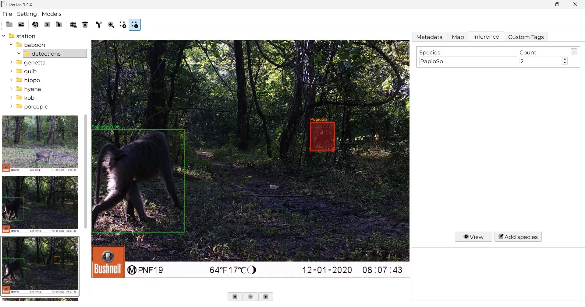
Each added or deleted box updates the species count and is saved to detections.json, so it counts in the report. Files created by very old versions of Declas cannot be edited this way.
12. Custom tags
Tags let you record your own observations for each image or video, such as sex, age class, behaviour or a manual distance. They become columns in the final table.
Define your tags
- Open Setting › Tags.
- Click Add Tag, then fill in a Tag Title, choose a Data Type (float, integer, text, date or boolean), and optionally list Predefined Values separated by commas.
- Click Save.
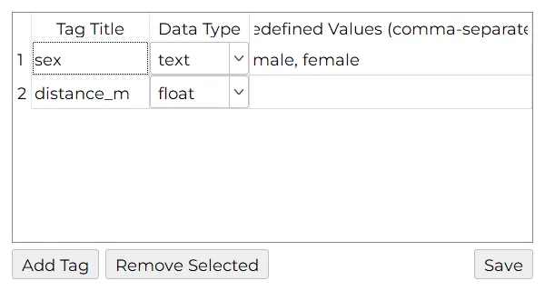
sex (male, female) and distance_m.Fill in tags
Open an image and go to the Custom Tags tab. Each tag has a field; tags with predefined values show a drop-down. Click Add entry to describe several individuals in the same image (Entry 1, Entry 2…). Values are saved automatically.
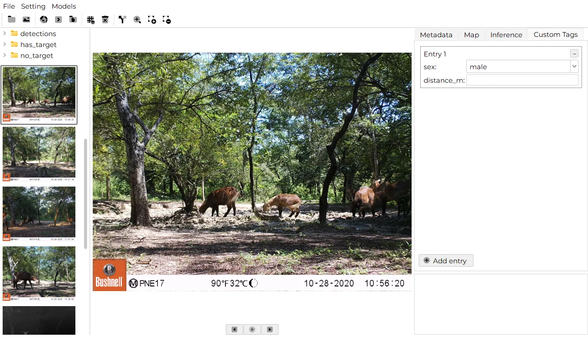
In the table, a text tag with predefined values becomes one 0/1 column per value (for example sex_male, sex_female), which is convenient for analysis. Other tags keep a single column with the value you entered. Each extra entry adds a row.
A tag called distance_m is treated specially when automatic distance estimation is on: manual values are added as extra rows for individuals the model did not detect, instead of overwriting estimated distances.
13. Metadata and map
The Metadata tab lists everything stored in the image file: GPS position, camera make, firmware, date and time the picture was taken, exposure and more.
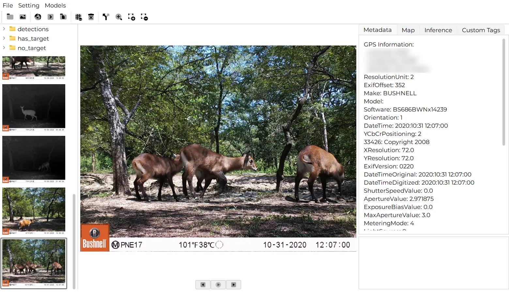
If the image has GPS coordinates, click Show on map to place it on an interactive map in the Map tab. If there is no GPS data, Declas tells you so.
Date, time and GPS are also copied into the table. The time_radian column gives the time of day as an angle between 0 and 2π, ready for activity-pattern analysis.
Before sharing results or screenshots publicly, consider removing or rounding coordinates of sensitive species. Exact locations can help poachers.
14. Working with videos
- Click a video thumbnail to play it in the viewer. Use the seek bar, ◀◀ / ▶▶ and Play/Pause.
- When Process video is ticked, Declas extracts one frame every Frame stride frames into a
framessub-folder (named<video>_f000120.jpg, and so on), runs the model on each frame, and merges the results into the folder'sdetections.json. - Each frame gets its own date and time, computed from the video's start time and the frame position. GPS is taken from the video file when it has any.
- In the table, rows from videos have
media_typeset to video.
Tags you enter for a video apply to its frames when the table is built.
15. Distance estimation
Declas can estimate how far each detected animal is from the camera, which is useful for camera trap distance sampling and density estimation. It uses Depth Anything V2 (Metric Outdoor), a model that predicts a depth in metres for every pixel (up to 80 m).
Set it up
- Open Setting › Inference parameters and tick Estimate under Distance estimation.
- Choose the Depth model. Its weights (about 97 MB) download automatically the first time, which needs an internet connection once.
- Click Set Field Of View and enter the horizontal field of view of each camera, in degrees (see below).
- Click Save, then run detection as usual.
Distance estimation starts automatically after detection. If a folder already has a detections.json, Declas skips detection and goes straight to distance estimation, which saves a lot of time.
Field of view per station
The field of view (FOV) corrects for animals that are off to the side of the image, which are further away than their depth alone suggests. Find it in your camera's manual (often between 40° and 60° for trail cameras).
- Use Add and Remove to edit the table, one row per station.
- Or click Upload CSV with one row per station. The columns
stationandfovare used; if they are named differently, the first column is the station and the second the FOV.
station,fov
SD25,52
SD28,52
SD30,48The station name must match the folder name: the selected folder in mode A, or the station folder in mode B (matching ignores upper/lower case). If you define a single FOV, it applies to every station. If no FOV matches, Declas uses the raw depth and shows a warning in the status bar.
How the distance is computed
For each box, Declas reads the depth at the bottom centre of the box, where the animal touches the ground. With a FOV, it converts the horizontal position of that point into an angle from the camera axis and divides the depth by its cosine:
pos = (x − width/2) / (width/2) # −1 left edge … +1 right edge
angle = atan(pos × tan(FOV / 2))
distance = depth / cos(angle)The result is stored for each individual as distance_m. In the table, an image with distances gets one row per individual (count = 1), each with its own distance.
Monocular depth is an estimate. Calibrate it for your site, for example by photographing a person or a marker at known distances in front of each camera, before using it for density estimates.
16. Separate empty images
Camera traps produce many empty images (wind, grass, sun). After running a model, click Target or No target split. In every processed folder, Declas creates:
has_target/: copies of images with at least one detection,no_target/: copies of images where nothing was found.

has_target and no_target appear next to detections.Images are copied, not moved, so the originals stay where they were. Remember that this doubles the disk space used by those images.
17. Build the table (CSV export)
- Select the folder (mode A) or project (mode B) you processed.
- Click Build table.
- A message confirms where the file was saved:
<task>_YYYYMMDD_HHMMSS.csv(for exampleclassification_20261011_211359.csv) inside the selected folder. Older tables are never overwritten.
Here are the first rows of a real table built from station SD30 (paths shortened, coordinates hidden):
| media | media_type | species | count | latitude | longitude | altitude | make | date | time | time_radian | distance_m | sex_male | sex_female |
|---|---|---|---|---|---|---|---|---|---|---|---|---|---|
| 10220130 | image | SylvicapraGrimmia | 1 | ••• | ••• | 184.0 | BUSHNEL | 2020:10:22 | 07:27:17 | 1.952 | |||
| 10260398 | image | HippopotamusAmphibious | 1 | ••• | ••• | 0.0 | BUSHNEL | 2020:10:26 | 02:37:32 | 0.687 | |||
| 10270578 | image | Empty | 0 | ••• | ••• | 209.0 | BUSHNEL | 2020:10:27 | 12:45:15 | 3.339 | |||
| 10280600 | image | KobusEllipsiprymnus | 3 | ••• | ••• | 205.0 | BUSHNEL | 2020:10:28 | 10:56:20 | 2.864 |
Column reference
| Column | Content |
|---|---|
media_path | Full path of the image (or video frame). |
media | File name without extension. |
media_type | image or video. |
category | Class returned by the model (or Empty). |
species | Species name. In project mode (B), the species folder name. |
station | Project mode (B) only: the station folder name. |
count | Number of individuals of that species in the image (1 per row when distances are present). |
latitude, longitude, altitude | GPS position from the file, when available. |
make, model | Camera brand and model from the file. |
date, time | When the picture was taken (YYYY:MM:DD, HH:MM:SS). |
time_radian | Time of day as an angle from 0 to 2π (00:00 = 0, 12:00 = π). |
distance_m | Estimated distance to the animal, in metres (empty if not computed). |
| your tags | One column per tag, or one 0/1 column per predefined value (sex_male, sex_female…). |
The CSV opens directly in Excel, LibreOffice, R (read.csv()) or Python (pandas.read_csv()).
18. Files created by Declas
Declas never changes your original media. Everything it produces sits next to them:
SD30/ ├── 10280600.JPG ← your original image, untouched ├── detections.json ← results for every file in this folder ├── detections/ │ ├── 10280600.JPG ← annotated copy with boxes │ └── custom_tags.json ← your tag values ├── frames/ ← video frames (only if the folder has videos) │ └── detections/ ├── has_target/ · no_target/ ← only after a split └── classification_20261011_211359.csv ← only after Build table
The detections.json format
Each entry is keyed by <file name>_<species> and keeps the individual boxes, so results can be re-used by other tools:
"10280600_KobusEllipsiprymnus": {
"media": "10280600",
"media_type": "image",
"species": "KobusEllipsiprymnus",
"count": 3,
"date": "2020:10:28",
"time": "10:56:20",
"time_radian": 2.864,
"detections": [
{ "species": "KobusEllipsiprymnus", "confidence": 0.76,
"bbox": [632.9, 804.7, 888.4, 997.3] },
…
]
}bbox is [x1, y1, x2, y2] in pixels, from the top-left corner of the image.
Starting over
Clear all detection/classification reports deletes every detections.json and every .csv file under the current folder, after asking for confirmation. This cannot be undone, so move any CSV you want to keep (including your own files) out of the folder first.
19. Import an existing result
Use File › Import to select a detections.json file, for example one produced on another computer. Declas confirms File imported ✅; you can then click Build table to create the CSV next to that file.
20. Settings
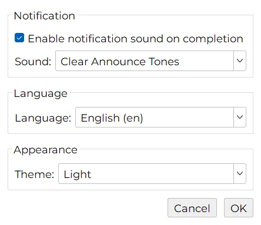
- Notification: tick Enable notification sound on completion and pick a sound to be alerted when a long run finishes. Selecting a sound plays a preview.
- Language: English or Français. The new language is applied the next time you start Declas.
- Theme: Light, Dark or System (follows your operating system). Also available in Setting › Appearance.
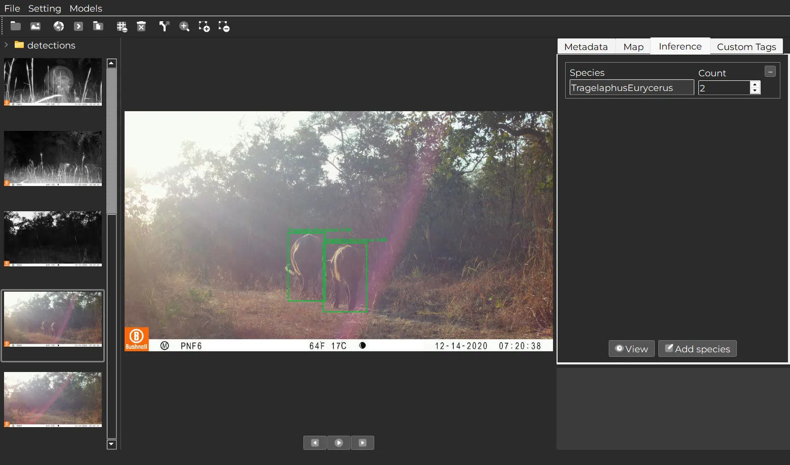
21. Publish your own model
Anyone can add a detection or classification model to Declas. Models › Publish shows these guidelines inside the app.
1. Create the extension folder
model_extensions/
└── my_model_v1/
├── manifest.json ← metadata (required)
├── adapter.py ← inference code (required)
└── README.md ← optional but appreciated
2. Describe it in manifest.json
{
"name": "my_model_v1",
"display_name": "My Model v1",
"version": "1.0",
"author": "Your name or organisation",
"description": "One sentence describing what the model does.",
"license": "CC-BY-4.0",
"license_url": "https://…",
"citation_url": "https://doi.org/…",
"info_url": "https://github.com/…",
"region": "West Africa",
"task": "classification",
"framework": "ultralytics",
"model_arch": "yolov8",
"environment": "PyTorch",
"input_type": "detect",
"model_file": "my_model.pt",
"download_url": "https://zenodo.org/records/…/files/my_model.pt?download=1",
"size_mb": 50,
"zip_url": "",
"adapter": "adapter.py",
"classes": ["species_a", "species_b"]
}3. Write adapter.py
from model_extensions.base import ModelAdapter
class MyModelAdapter(ModelAdapter):
def load(self, model_path: str, device: str) -> None:
# Called once. model_path is the downloaded weights file.
...
def predict_single(self, image_path: str, conf_thres: float) -> list:
# One dict per detection:
# species (str), confidence (0–1), bbox [x1, y1, x2, y2] in pixels, or []
return [{"species": "lion", "confidence": 0.92, "bbox": [10, 20, 300, 400]}]4. Host the weights and submit
- Host the weights on Zenodo (free, with a DOI), the Hugging Face Hub, or GitHub Releases (files under 2 GB).
download_urlmust be a direct download link. - Fork the Declas repository, add your folder under
model_extensions/and an entry inmodel_extensions/registry.json. - Open a pull request with a short description. The maintainers review the code, test the download and merge it, and your model then appears in every user's Available tab.
22. Troubleshooting and FAQ
Declas says "No model installed. Add one!"
Install a model in Models › Extensions › Available, then select it in Setting › Inference parameters and click Save.
"Extension '…' weights not downloaded."
The model is listed but its weights file is missing, usually because a download was interrupted. Delete it in the Installed tab and download it again.
"No valid subdirectories found" when running a folder
You are in project mode (Run on main directory unticked) but selected a folder that contains images. Tick Run on main directory, or select the parent folder that holds the station folders. See Organise your data.
Videos are ignored
Tick Process video in Inference parameters. The status bar says "Video processing is disabled" when it is off.
Too many missed animals, or too many false detections
Adjust the Confidence threshold: lower it to catch more animals, raise it to reduce false positives. You can also fix individual images with the box tools.
Processing is slow
Use a CUDA graphics card if you have one (Device: cuda), increase the Frame stride for videos, untick Process video if you do not need it, or pick a smaller model (MegaDetector 6b is 50 MB versus 281 MB for 5a).
The "View" button shows nothing
Run detection or classification on that image first. View shows the annotated copy from the detections folder.
"No GPS info found" when using Show on map
The image does not contain GPS coordinates. Many camera traps do not record them; you can join station coordinates to the CSV later in your analysis.
Does Declas need internet?
Only to download models (and the depth model the first time distance estimation is used). Processing itself is fully offline.
Where can I get more help?
Search or open an issue on GitHub, or use the contact form. Including your Declas version, operating system and the log file helps a lot. On Windows the log is at %TEMP%\declas_running_verbose.log; on macOS and Linux it is declas_running_verbose.log in your temporary folder.